I am sure you have subscribed to many YouTube channels. Each hosting a lot of subscribers. But what is the one that is highly creative and speaks volumes about the creator and their videos? That's right; it's their custom YouTube banner - you can even call it Channel art.
There are only so many ways you can do branding on the video-sharing platform, and your YT Channel art is one of them. When created with utmost care and consideration, it can even win you more subscribers.
Of course, you can also buy YouTube subscribers from authentic vendors, but let’s keep that topic for another time shall we.
This article will help you understand more about YouTube banners and we shall also discuss tools that can help you create your first custom YouTube channel art.
Let's dive right in.
Contents
- 1. What Is YouTube Channel Art?
- 2. How to Make YouTube Channel Art?
- 3. Guidelines for YouTube Channel Banner
- 4. How to Make a YouTube Channel Art for Free
- 5. How to Change YouTube Channel Art on Desktop
- 6. How to Add Cover Photo on YouTube Channel on the Phone
- 7. Tips for YouTube Channel Banner Design
- 8. Add Necessary Information in Your YouTube Channel Art
- 9. Use Clear and Easily Readable Fonts
- 10. Summarise Your Channel Briefly in Your YouTube Channel Art
- 11. The Background Image of Your YouTube Channel Art Should Be Relevant to Your Channel Theme
- 12.Place a Border around Your YouTube Channel Art
What Is YouTube Channel Art?
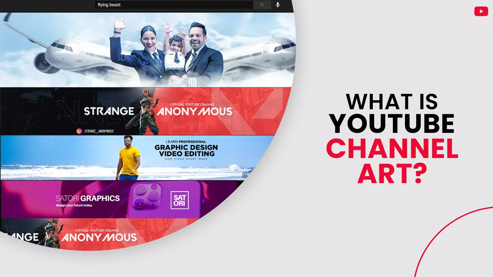
Your Facebook pages have a cover image, and so does your website homepage. Your YouTube banner is equivalent to its website and Facebook counterpart – it makes up the top portion of your channel homepage.
Your channel art presence is prominent - it is significant, and it attracts visitor’s gazes towards itself, more so than any other elements present on your channel page.
Your YT banner is the first thing your new audience will see and this could be your only opportunity to convert them into your permanent subscribers. We don’t say this enough, but your channel art is vital; it should represent who you are as a brand and what you do on your channel.
How to Make YouTube Channel Art?
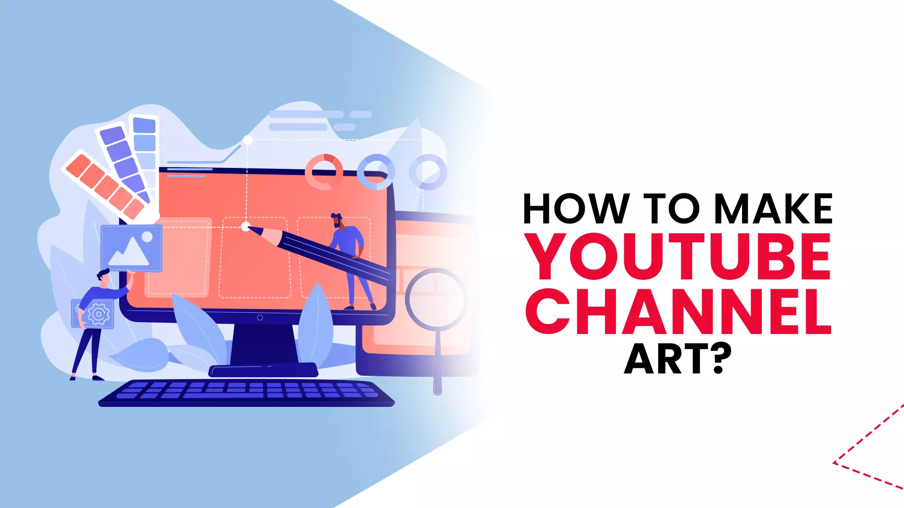
We have just stressed the importance of your YT channel art, but now another question arises, 'how do you make your YouTube banner?' - well, it shouldn't be a problem for a graphic designing professional. But, if you are an amateur with little to no hands-on design experience, then the thought of being incapable of creating a good enough banner can hold you back. Do not sweat the little stuff because we got you covered.
But, before we go ahead and start designing, we have to understand some YouTube guidelines laid down for channel art.
Also read: Creating click worthy thumbnails
Guidelines for YouTube Channel Banner
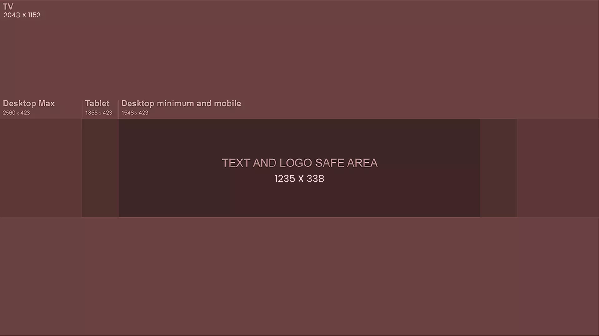
The banner design should check out all the following points:
- Your YouTube channel art size can have a minimum dimension of 2048 X 1152 px and an aspect ratio of 16:9.
- For the specified dimension, make sure to place your text and logos within the area of 1235 X 338 px. Note that big pictures can appear cropped on devices with different screen resolutions.
- Your file size should be 6 MB or smaller.
How to adjust the image size?
To adjust your banner image, your in-built computer/device image editor or any online picture resizer would suffice.
How to Make a YouTube Channel Art for Free
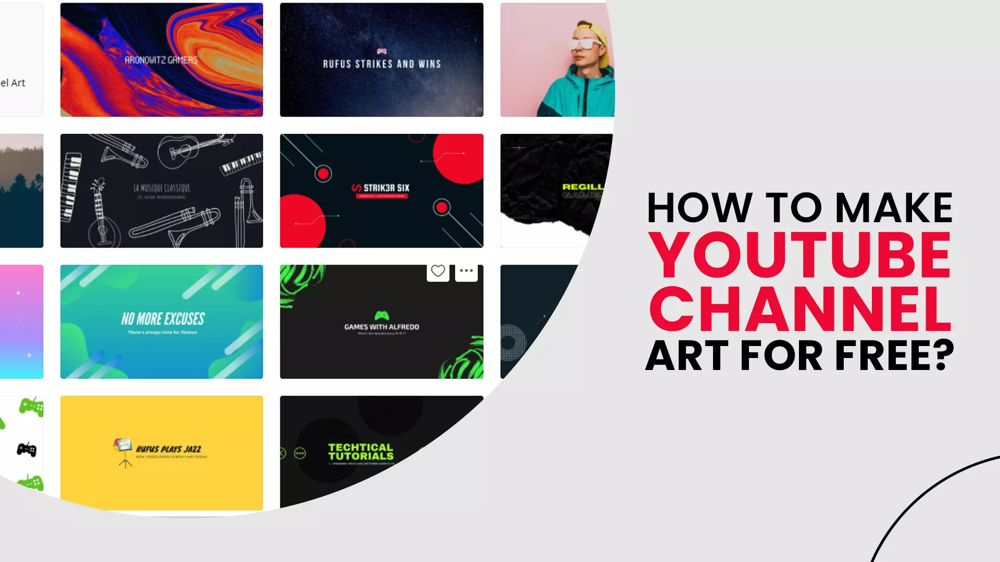
Did you glance through the guidelines? Great! Now, let us look at some free YT banner maker tools that you can utilize to create professional-looking channel art.
- Canva: canva has become one of the preferred destinations for many YouTubers who lack the necessary design expertise to create a channel art from scratch. The website has numerous free YouTube Channel art templates that you can modify as per your needs. You are also given access to a library of stock photos which you can use in your banner.
- Snappa: snappa is an easy to use online graphic design tool, with a plethora of free channel art templates, high-quality graphics, pictures, shapes and elements. You can even download your creation in different formats like JPG, PNG retina JPG and retina PNG.
- Placeit: next up on our list is Placeit, and just like others, it comes with pre-designed Channel art thumbnails, outros, intros, logos etc. You can bring your YT banner to life with creative assets like photos, graphics and other design elements.
Do you have a gaming channel and are looking for a creative Channel art? - then Placeit is the one for you. They have hundreds of gaming-themed YouTube banner templates to choose from. What's more, you will even gain some insights on how you can make your banner even better.
- Google: how can our list be complete without including the hosting platform itself? The most popular search engine on the planet maintains its collection of channel art templates, which you can use for your banner.
- Fotor: Fotor bears a striking resemblance to Canva and has its own Channel art templates collection. Like canva, you can upload and use your graphic assets or utilize the stock images already available on Fotor.
How to Change YouTube Channel Art on Desktop
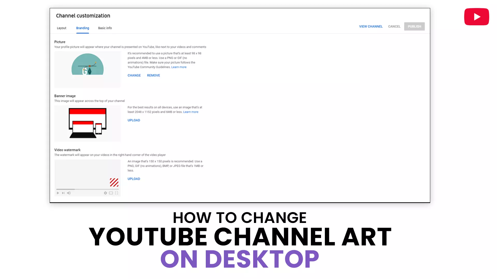
Go through the following step-by-step process and upload or change your banner image.
Step 1: sign in to your channel with your email id and password.
Step 2: on the YouTube homepage, click on your channel icon on the top right corner of your screen.
Step 3: select YT studio from the popup window.
Step 4: Click 'Customization' on the left-hand column of your screen.
Step 5: Press 'Branding' on the navigational tab above.
Step 6: In the 'Banner image' section, click UPLOAD to set your first banner image.
Step 7: to change an existing banner image, tap on ' CHANGE' and choose a photo of your choice.
Step 8: crop and preview your image and press 'DONE'.
Step 9: press 'PUBLISH' to confirm your changes.
Note: Your banner image will show up in different resolutions when viewed on other devices like computer, mobile, iPad or television screen.
How to Add Cover Photo on YouTube Channel on the Phone
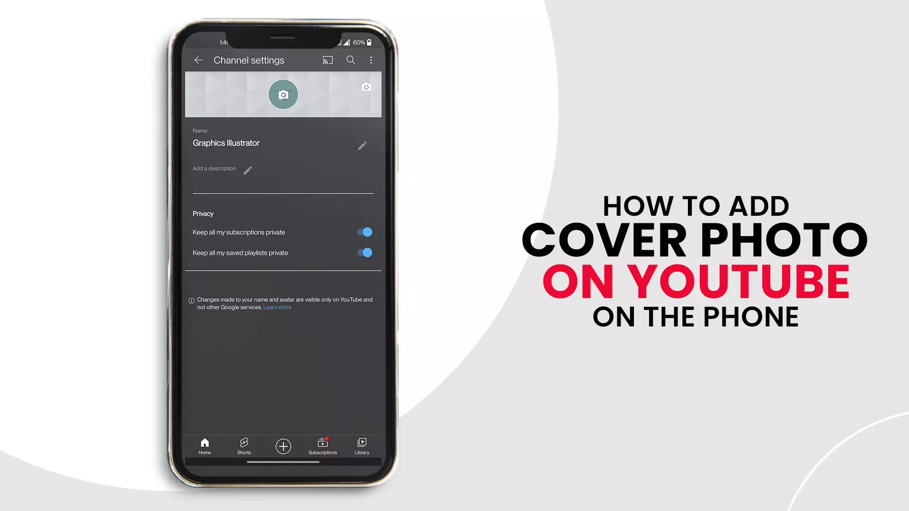
Please remember that it is impossible to upload or change your channel banner from the app. You can only do it from a browser.
We will use Chrome; you are free to use one of your choices.
Step 1: Open Chrome on your mobile device.
Step 2: enter 'YouTube studio' in search.
Step 3: In the results, go to YouTube studio.
Step 4: enter your credentials and sign in to your account.
Step 5: Click on 'Channel Customization'.
Step 6: press 'Branding'.
Step 7: Navigate to the 'Banner image' section.
Step 8: Click on 'UPLOAD'.
Step 9: Select an image from your device internal storage.
Step 10: preview your channel banner and press 'DONE'
Step 11: press 'PUBLISH' to confirm your channel art.
And, you're done.
Tips for YouTube Channel Banner Design
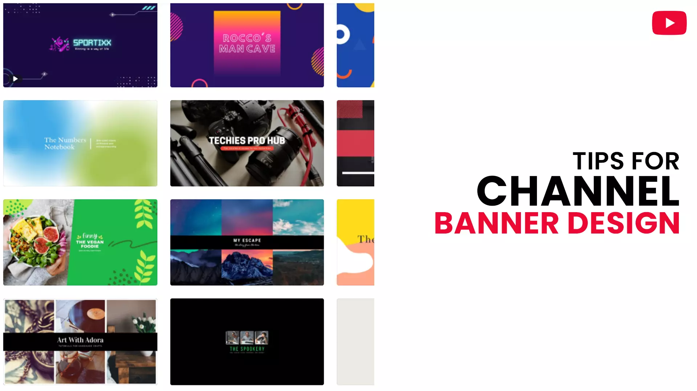
Have A Simple YouTube Banner Design
No doubt, your YT banner takes quite a lot of space on your channel homepage, but it is not big enough to have multiple elements packed into it. Hence it will be helpful to design simple Channel art to avoid unnecessary cluttering.
Best practices:
- Restrict yourself to an image as your Channel art background, with your title in the centre.
- To avoid clashing supremacy between your text and background image, you can place a transparent overlay between them. Doing so puts more emphasis on your text, at the same time, enables the background to shine through effectively.
You can also choose to focus on your tagline by placing a simple background image but have texts with big and bold fonts.
Add Necessary Information in Your YouTube Channel Art
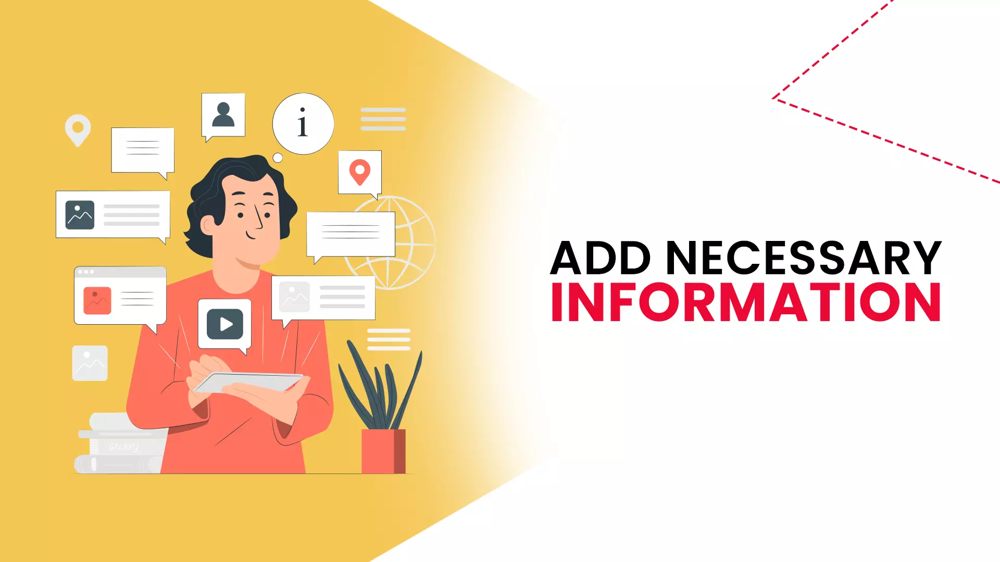
Your Channel art will appear differently on different screen resolutions. The size varies from a small mobile screen to a large TV monitor; for the latter, your banner will appear in its full glory, whereas it will be skinny in the former. Hence, it becomes vital to place essential details about your channel in the safe area of your banner. What is the 'safe area'? - you can call it the space that remains unchanged, even when viewed on different devices or browsers.
- The optimum safe zone for your YouTube banner is 1546 x 423px. Text or graphic elements placed in this area will not be cropped when seen on various devices.
- The platform won't cut the safe zone at 2560 x 423 px, but the left and right side of the safe area depends on the device or browser it is viewed on.
When you upload your YouTube channel art, you can make minute crop adjustments, but you cannot move the selection from the frame.
Use Clear and Easily Readable Fonts
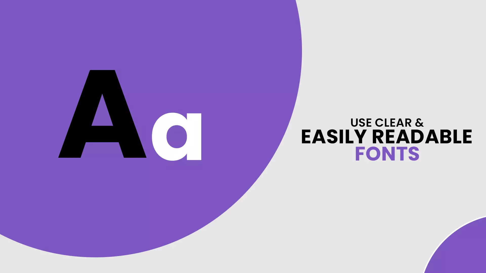
A significant portion of network users that log in to YouTube do so from mobile devices – 40.9% of YouTube watch-time is attributed to mobile devices. The point we are trying to make is, do not make reading a struggle for your viewers by using unclear text or small fonts.
We strongly advise you to make use of large and bold fonts on your YouTube channel art. Doing so will make it easier for your viewers to see any call-to-action or a brand name you have inserted in your banner.
Summarise Your Channel Briefly in Your YouTube Channel Art
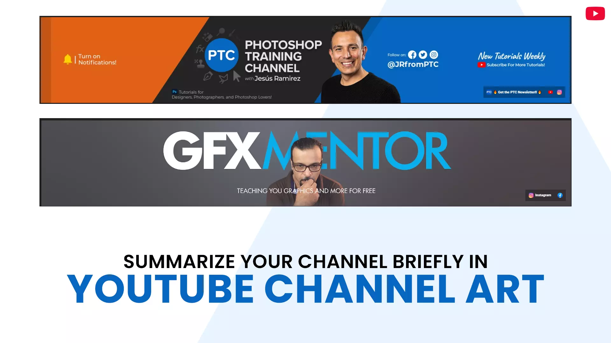
Tell me honestly, would you prefer reading a long description with many lines of text describing something or a small snippet that summarises everything you need to know? - the answer is obvious, isn't it.
Make the best use of your YT banner by including an excerpt comprising a single line. You not only help your visitors understand what your channel is all about but also compel them to convert into your subscribers, and grow your channel.
The Background Image of Your YouTube Channel Art Should Be Relevant to Your Channel Theme
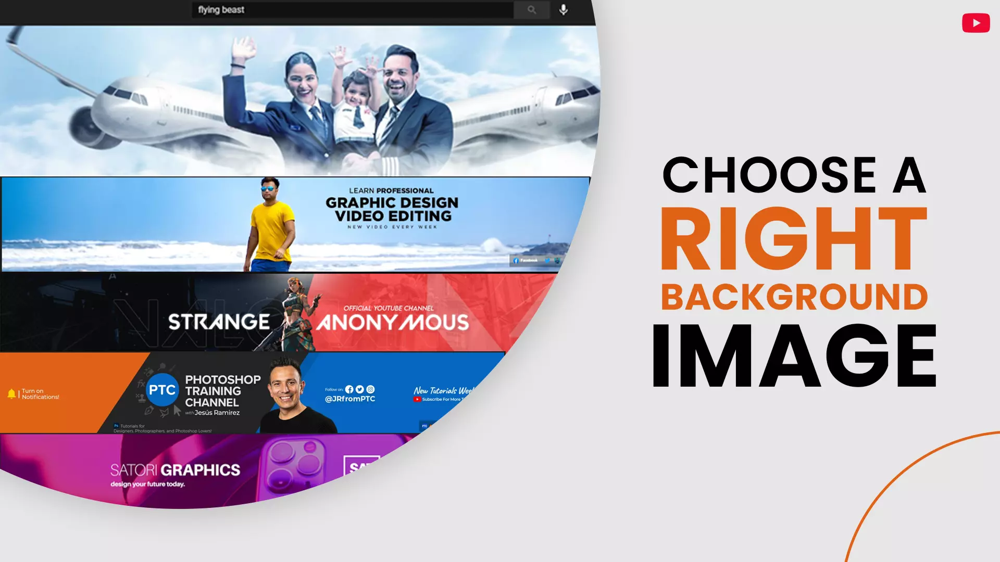
Any paid or free YouTube banner maker comes with many stock photos that you can easily use in your Channel art. But should you do it, though? - you can do it if that image resonates with your channel, do not do it if the picture is vague and irrelevant.
You want your banner to attract new audiences to your channel, not to push them away.
Think about it this way; you are an admin of a gaming channel. How would your visitor react if he sees a mountain landscape in your channel art? - in a worst-case scenario, any interest he/she had in checking out your videos would be lost in an instant.
I am sure you are getting the point I am trying to make. Always use visual graphic assets that are interesting and relevant to your channel. And at the same time, make sure it does not sway viewers' attention away from your text tagline.
Place a Border around Your YouTube Channel Art
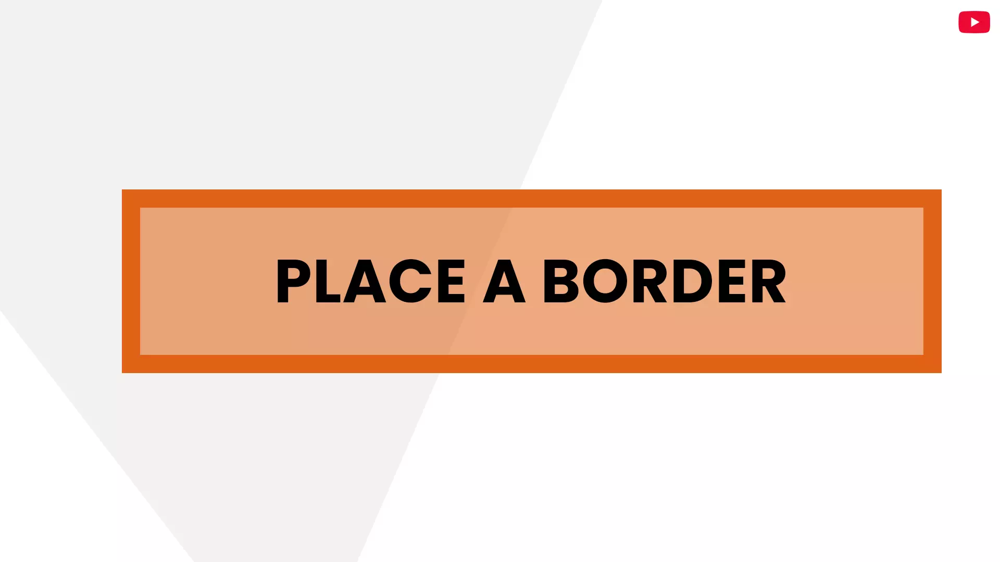
Banners that are simple and precise do an excellent job of conveying the channel message to its visitors. As much as possible, go for a minimalistic design approach; they require less effort and get the job done.
Placing a border into your banner will make your simple design pop out and get the centre of your channel art into your viewer's range of vision.
This approach is ideal for directing the viewer's attention towards the call to action.
To Sum Up
You are doing nothing wrong by putting time and effort into creating an amazing looking YouTube Channel art. But at the same time, you should know that your banner is just a part of your YouTube video marketing strategy. Your channel art won't be much effective if you lack in other areas; for example, the quality of your videos is poor, or you feign ignorance to consistent uploads.
You will attain desirable outcomes only when all pieces work in synchronisation towards a singular goal.
We hope you found value from our article. From all the channels that you follow, which one has the best YouTube channel art? Do let us know in the comments.
Feel free to share.